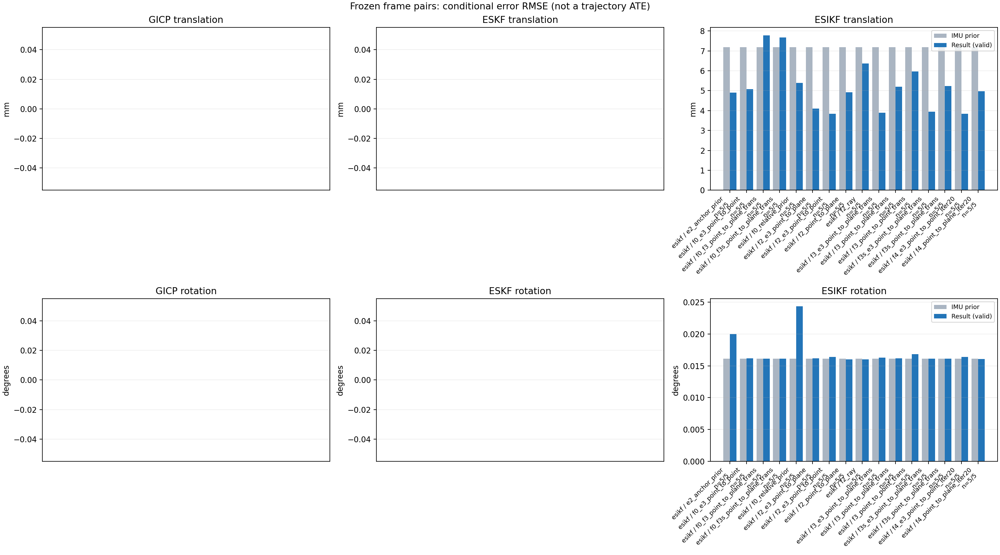

20261015_112553_up · depth=disparity_cache · cache=6ed395110be99ee52b48
模型视差：/home/ubuntu22/slam/SIO_SLAM/models/tensorrt/disp_896x448_fp16.plan；engine SHA256=604cf6ac1f705c877260711730dd5d2d58c2a21f3020c03c668401ef7fb1e768。输入为生产裁剪与光照处理后的 RGB 0..255；此实验使用原始浮点像素视差，不应用完整前端的邻域视差后处理。
原始 ONNX SHA256：e9f49736a65d68d06681add463866b6defdf78fdd7f4f50f6cc941b682fdc0bc。
代价体图改写验证：ONNX Runtime 固定随机特征输入，最大绝对误差 0；该项检查图改写，完整模型精度仍需由录制数据评估。
配准代码版本：744ac2d993ae629b0cc44a3b1d995e04ab4fad48；观测生成版本：744ac2d993ae629b0cc44a3b1d995e04ab4fad48。
固定图像对与纯 IMU 先验；ESKF 回放固定 GICP 观测，ESIKF 直接读取点云。真值只用于此报告。
同时查看 converged 与 solver_status：上游默认 Stereo 在 max_iter / stopped_at_minimum 时也可能置 converged=true。valid 表示输入检查通过，不表示精度提升。欧氏 GICP 未提供独立的点距 RMSE，该列显示 NaN。
误差按每对图像的锚点计算，单位 m / degrees。此处 RMSE 不是全序列 ATE；末帧受同一锚点条件约束。NIS 与条件马氏距离是诊断量，少量相关图像对不能用于宣称协方差已校准。
全部指标 CSV · R / P 矩阵 CSV · Stereo 求解逐轮 CSV · ESIKF 逐轮轨迹 CSV · 末轮 H / R / K_pose 矩阵 CSV · 配置快照 · 矢量图
unflagged 排除纯惯性先验平移误差超过 50 mm 的图像对；whitened 为误差按协方差白化后的每自由度均值，协方差与实际误差相符时约为 1。prior_whitened 用真值误差只检验先验 P；NIS 为 ESIKF 首轮 rᵀ(P+R)⁻¹r，不用真值，检验的是 P+R 的总量，单靠它分不开 P 与 R，偏差、错误对应和线性化误差也会抬高它。观测方差超过先验方差 1e+04 倍的方向视为不可观，从 NIS 及其自由度中去掉（nis_dof）。一致时 nis_per_dof 均值约 1、nis_over_chi2_median 中位数约 1；帧对少且共享序列，超出 95% 分位的比例只作参考。每轮重新关联时首轮只走到观测的一部分，nis 会偏小；nis_final 用最后一轮线性化点的创新 r_v + e_j，应以它为准。
| stage | method | variant | valid | total | result_translation_rmse_m | result_rotation_rmse_deg | result_translation_median_m | result_rotation_median_deg | result_translation_rmse_unflagged_m | result_rotation_rmse_unflagged_deg | improved_translation | improved_rotation | posterior_whitened_by_P_rot_mean | posterior_whitened_by_P_trans_mean | prior_whitened_by_P_rot_mean | prior_whitened_by_P_trans_mean | nis_per_dof_mean | nis_over_chi2_median_median | nis_exceeds_chi2_95_fraction | nis_final_per_dof_mean | nis_final_over_chi2_median_median | nis_final_exceeds_chi2_95_fraction |
|---|---|---|---|---|---|---|---|---|---|---|---|---|---|---|---|---|---|---|---|---|---|---|
| esikf | esikf | e2_anchor_prior | 5 | 5 | 0.0049053 | 0.02001 | 0.0021185 | 0.0066857 | 0.0049053 | 0.02001 | 3 | 4 | 38.451 | 58.204 | 24.276 | 0.63869 | 3.8142 | 2.9679 | 0.6 | 6.5392 | 8.7736 | 1 |
| esikf | esikf | f0_e3_point_to_point | 5 | 5 | 0.0050729 | 0.016185 | 0.0033746 | 0.0071534 | 0.0050729 | 0.016185 | 2 | 2 | 19.854 | 1.0571 | 19.522 | 0.0039118 | 0.011576 | 0.012031 | 0 | 0.035366 | 0.04321 | 0 |
| esikf | esikf | f0_f3_point_to_plane_trans | 5 | 5 | 0.007785 | 0.016144 | 0.0071082 | 0.0071643 | 0.007785 | 0.016144 | 2 | 2 | 19.83 | 32.084 | 19.522 | 0.0039118 | 2.5749 | 0.10039 | 0.2 | 3.3535 | 0.062162 | 0.2 |
| esikf | esikf | f0_f3s_point_to_plane_trans | 5 | 5 | 0.0076675 | 0.016134 | 0.0071059 | 0.0071514 | 0.0076675 | 0.016134 | 2 | 0 | 19.522 | 31.193 | 19.522 | 0.0039118 | 2.5749 | 0.10039 | 0.2 | 3.3525 | 0.050723 | 0.2 |
| esikf | esikf | f0_relative_prior | 5 | 5 | 0.0053882 | 0.024333 | 0.0031841 | 0.0067409 | 0.0053882 | 0.024333 | 2 | 4 | 31.887 | 58.218 | 19.522 | 0.0039118 | 3.4611 | 2.416 | 0.6 | 6.7408 | 9.7056 | 1 |
| esikf | esikf | f2_e3_point_to_plane | 5 | 5 | 0.004094 | 0.016205 | 0.0021665 | 0.0071312 | 0.004094 | 0.016205 | 3 | 2 | 25.855 | 0.61656 | 24.276 | 0.63869 | 0.38845 | 0.52018 | 0 | 0.46992 | 0.64054 | 0 |
| esikf | esikf | f2_e3_point_to_point | 5 | 5 | 0.0038464 | 0.016387 | 0.002178 | 0.0071454 | 0.0038464 | 0.016387 | 3 | 2 | 26.591 | 0.6515 | 24.276 | 0.63869 | 0.068138 | 0.087496 | 0 | 0.20135 | 0.12751 | 0 |
| esikf | esikf | f2_point_to_plane | 5 | 5 | 0.0049196 | 0.016031 | 0.0017811 | 0.0070118 | 0.0049196 | 0.016031 | 3 | 2 | 28.345 | 11.57 | 24.276 | 0.63869 | 16.564 | 14.343 | 0.8 | 15.746 | 12.279 | 0.8 |
| esikf | esikf | f2_ray | 5 | 5 | 0.0063695 | 0.015999 | 0.0042418 | 0.0076333 | 0.0063695 | 0.015999 | 2 | 2 | 30.326 | 12.835 | 24.276 | 0.63869 | 15.823 | 6.5284 | 0.8 | 15.225 | 3.4389 | 0.6 |
| esikf | esikf | f3_e3_point_to_plane_trans | 5 | 5 | 0.0038937 | 0.016287 | 0.0021911 | 0.0071527 | 0.0038937 | 0.016287 | 3 | 1 | 25.964 | 0.58867 | 24.276 | 0.63869 | 0.90993 | 1.0702 | 0 | 1.0555 | 1.2063 | 0 |
| esikf | esikf | f3_point_to_plane_trans | 5 | 5 | 0.0052066 | 0.016197 | 0.0029297 | 0.0071954 | 0.0052066 | 0.016197 | 2 | 1 | 29.621 | 16.467 | 24.276 | 0.63869 | 18.47 | 19.899 | 0.6 | 19.071 | 17.852 | 0.6 |
| esikf | esikf | f3_point_to_point_trans | 5 | 5 | 0.005968 | 0.016827 | 0.0054509 | 0.0075925 | 0.005968 | 0.016827 | 1 | 2 | 30.793 | 193.17 | 24.276 | 0.63869 | 4.7828 | 7.5283 | 0.6 | 32.561 | 23.203 | 0.8 |
| esikf | esikf | f3s_e3_point_to_plane_trans | 5 | 5 | 0.0039437 | 0.016134 | 0.0021911 | 0.0071514 | 0.0039437 | 0.016134 | 3 | 0 | 24.276 | 0.59342 | 24.276 | 0.63869 | 0.90993 | 1.0702 | 0 | 1.0575 | 1.2063 | 0 |
| esikf | esikf | f3s_point_to_plane_trans | 5 | 5 | 0.0052308 | 0.016134 | 0.0029147 | 0.0071514 | 0.0052308 | 0.016134 | 2 | 0 | 24.276 | 16.641 | 24.276 | 0.63869 | 18.47 | 19.899 | 0.6 | 19.185 | 18.546 | 0.6 |
| esikf | esikf | f4_e3_point_to_point_iter20 | 5 | 5 | 0.0038464 | 0.016387 | 0.002178 | 0.0071454 | 0.0038464 | 0.016387 | 3 | 2 | 26.591 | 0.6515 | 24.276 | 0.63869 | 0.068138 | 0.087496 | 0 | 0.20135 | 0.12751 | 0 |
| esikf | esikf | f4_point_to_plane_iter20 | 5 | 5 | 0.0049751 | 0.01607 | 0.0017811 | 0.0070118 | 0.0049751 | 0.01607 | 3 | 2 | 28.389 | 11.792 | 24.276 | 0.63869 | 16.564 | 14.343 | 0.8 | 15.765 | 12.279 | 0.8 |

| stage | case | method | variant | status | solver_status | inliers | converged | covariance_convention | covariance_from_hessian | fitness | registration_rmse_m | prior_trans_error_m | result_trans_error_m | prior_rot_error_deg | result_rot_error_deg | prior_flagged | R_rot_trace_rad2 | R_pos_trace_m2 | nis_regularized | posterior_whitened_by_P_rot | posterior_whitened_by_P_trans | prior_whitened_by_P_rot | prior_whitened_by_P_trans | nis_per_dof | nis_dof | nis_final_per_dof | nis_final_dof |
|---|---|---|---|---|---|---|---|---|---|---|---|---|---|---|---|---|---|---|---|---|---|---|---|---|---|---|---|
| esikf | static_start | esikf | e2_anchor_prior | updated | converged | 13059 | 1 | 1 | 0 | 0 | 0.00010771 | 0.00038815 | 0.0065735 | 0.0064113 | 0 | 1.919e-07 | 1.0115e-06 | nan | 9.7912 | 0.84156 | 9.504 | 0.041466 | 2.6454 | 6 | 2.6229 | 6 | |
| esikf | static_start | esikf | f0_relative_prior | updated | converged | 13049 | 1 | 1 | 0 | 0 | 0.00010771 | 0.0017503 | 0.0065735 | 0.0063117 | 0 | 1.9303e-07 | 1.0192e-06 | nan | 9.1349 | 4.7063 | 9.3861 | 0.0015256 | 2.1535 | 6 | 2.5887 | 6 | |
| esikf | static_start | esikf | f2_point_to_plane | updated | converged | 13059 | 1 | 1 | 0 | 0 | 0.00010771 | 0.00059136 | 0.0065735 | 0.0070118 | 0 | 1.2849e-06 | 5.057e-06 | nan | 10.932 | 1.423 | 9.504 | 0.041466 | 23.046 | 6 | 23.03 | 6 | |
| esikf | static_start | esikf | f2_ray | updated | converged | 13059 | 1 | 1 | 0 | 0 | 0.00010771 | 0.00062773 | 0.0065735 | 0.0065593 | 0 | 0.016585 | 2.091e-05 | nan | 9.4644 | 1.4897 | 9.504 | 0.041466 | 34.654 | 3 | 34.582 | 3 | |
| esikf | static_start | esikf | f3_point_to_point_trans | updated | converged | 13150 | 1 | 1 | 0 | 0 | 0.00010771 | 0.0023265 | 0.0065735 | 0.0065607 | 0 | 0.18748 | 9.4725e-07 | nan | 9.468 | 43.423 | 9.504 | 0.041466 | 6.8173 | 3 | 34.927 | 3 | |
| esikf | static_start | esikf | f3_point_to_plane_trans | updated | converged | 13068 | 1 | 1 | 0 | 0 | 0.00010771 | 0.0010245 | 0.0065735 | 0.006566 | 0 | 1.2803 | 5.0168e-06 | nan | 9.4821 | 4.2354 | 9.504 | 0.041466 | 30.543 | 3 | 30.9 | 3 | |
| esikf | static_start | esikf | f0_f3_point_to_plane_trans | updated_not_converged | max_iterations | 13295 | 0 | 1 | 0 | 0 | 0.00010771 | 0.0071082 | 0.0065735 | 0.0065536 | 0 | 1.2078 | 4.1304e-06 | nan | 9.3292 | 35.783 | 9.3861 | 0.0015256 | 11.567 | 3 | 15.717 | 3 | |
| esikf | static_start | esikf | f3s_point_to_plane_trans | updated | converged | 13068 | 1 | 1 | 0 | 0 | 0.00010771 | 0.0010245 | 0.0065735 | 0.0065735 | 0 | 1.2803 | 5.0168e-06 | nan | 9.504 | 4.2354 | 9.504 | 0.041466 | 30.543 | 3 | 30.9 | 3 | |
| esikf | static_start | esikf | f0_f3s_point_to_plane_trans | updated_not_converged | max_iterations | 13295 | 0 | 1 | 0 | 0 | 0.00010771 | 0.0071059 | 0.0065735 | 0.0065735 | 0 | 1.2078 | 4.1305e-06 | nan | 9.3861 | 35.762 | 9.3861 | 0.0015256 | 11.567 | 3 | 15.707 | 3 | |
| esikf | static_start | esikf | f4_point_to_plane_iter20 | updated | converged | 13059 | 1 | 1 | 0 | 0 | 0.00010771 | 0.00059136 | 0.0065735 | 0.0070118 | 0 | 1.2849e-06 | 5.057e-06 | nan | 10.932 | 1.423 | 9.504 | 0.041466 | 23.046 | 6 | 23.03 | 6 | |
| esikf | static_start | esikf | f2_e3_point_to_point | updated | converged | 13059 | 1 | 1 | 0 | 0 | 0.00010771 | 0.00011142 | 0.0065735 | 0.0065765 | 0 | 2.1344e-05 | 8.421e-05 | nan | 9.523 | 0.044667 | 9.504 | 0.041466 | 0.022196 | 4 | 0.022196 | 4 | |
| esikf | static_start | esikf | f0_e3_point_to_point | updated | converged | 13059 | 1 | 1 | 0 | 0 | 0.00010771 | 0.00022225 | 0.0065735 | 0.0065747 | 0 | 2.1344e-05 | 8.4211e-05 | nan | 9.399 | 0.0084798 | 9.3861 | 0.0015256 | 0.019564 | 4 | 0.0197 | 4 | |
| esikf | static_start | esikf | f2_e3_point_to_plane | updated | converged | 13059 | 1 | 1 | 0 | 0 | 0.00010771 | 0.00011128 | 0.0065735 | 0.0065855 | 0 | 7.5074e-05 | 0.00018163 | nan | 9.5403 | 0.044368 | 9.504 | 0.041466 | 0.41025 | 3 | 0.41025 | 3 | |
| esikf | static_start | esikf | f3_e3_point_to_plane_trans | updated | converged | 13059 | 1 | 1 | 0 | 0 | 0.00010771 | 0.00011917 | 0.0065735 | 0.0065734 | 0 | 1.2849 | 0.00018163 | nan | 9.5037 | 0.050876 | 9.504 | 0.041466 | 0.95138 | 3 | 0.95138 | 3 | |
| esikf | static_start | esikf | f3s_e3_point_to_plane_trans | updated | converged | 13059 | 1 | 1 | 0 | 0 | 0.00010771 | 0.00011917 | 0.0065735 | 0.0065735 | 0 | 1.2849 | 0.00018163 | nan | 9.504 | 0.050876 | 9.504 | 0.041466 | 0.95138 | 3 | 0.95138 | 3 | |
| esikf | static_start | esikf | f4_e3_point_to_point_iter20 | updated | converged | 13059 | 1 | 1 | 0 | 0 | 0.00010771 | 0.00011142 | 0.0065735 | 0.0065765 | 0 | 2.1344e-05 | 8.421e-05 | nan | 9.523 | 0.044667 | 9.504 | 0.041466 | 0.022196 | 4 | 0.022196 | 4 | |
| esikf | sync_motion | esikf | e2_anchor_prior | updated | converged | 12337 | 1 | 1 | 0 | 0 | 0.00046372 | 0.00089778 | 0.0071514 | 0.0066857 | 0 | 2.068e-07 | 1.0189e-06 | nan | 14.533 | 3.1887 | 15.484 | 0.36049 | 9.6757 | 6 | 10.455 | 6 | |
| esikf | sync_motion | esikf | f0_relative_prior | updated_not_converged | max_iterations | 12361 | 0 | 1 | 0 | 0 | 0.00046372 | 0.0031841 | 0.0071514 | 0.0067409 | 0 | 2.0426e-07 | 9.7548e-07 | nan | 13.761 | 22.9 | 15.066 | 0.001262 | 9.1545 | 6 | 10.54 | 6 | |
| esikf | sync_motion | esikf | f2_point_to_plane | updated | converged | 12377 | 1 | 1 | 0 | 0 | 0.00046372 | 0.0011855 | 0.0071514 | 0.0062694 | 0 | 1.3109e-06 | 4.8702e-06 | nan | 12.259 | 3.9093 | 15.484 | 0.36049 | 41.145 | 6 | 39.81 | 6 | |
| esikf | sync_motion | esikf | f2_ray | updated | converged | 12338 | 1 | 1 | 0 | 0 | 0.00046372 | 0.0012655 | 0.0071514 | 0.0076333 | 0 | 0.0087779 | 1.2606e-05 | nan | 17.545 | 3.8041 | 15.484 | 0.36049 | 31.975 | 3 | 33.784 | 3 | |
| esikf | sync_motion | esikf | f3_point_to_point_trans | updated | converged | 12433 | 1 | 1 | 0 | 0 | 0.00046372 | 0.0054509 | 0.0071514 | 0.0075925 | 0 | 0.20084 | 9.3539e-07 | nan | 17.915 | 205.5 | 15.484 | 0.36049 | 10.725 | 3 | 103.27 | 3 | |
| esikf | sync_motion | esikf | f3_point_to_plane_trans | updated | converged | 12379 | 1 | 1 | 0 | 0 | 0.00046372 | 0.0019078 | 0.0071514 | 0.0071954 | 0 | 1.3163 | 4.8107e-06 | nan | 15.912 | 10.288 | 15.484 | 0.36049 | 43.389 | 3 | 46.936 | 3 | |
| esikf | sync_motion | esikf | f0_f3_point_to_plane_trans | updated_not_converged | max_iterations | 12486 | 0 | 1 | 0 | 0 | 0.00046372 | 0.0094283 | 0.0071514 | 0.0071643 | 0 | 1.276 | 4.27e-06 | nan | 15.143 | 45.963 | 15.066 | 0.001262 | 1.2121 | 3 | 0.98256 | 3 | |
| esikf | sync_motion | esikf | f3s_point_to_plane_trans | updated | converged | 12379 | 1 | 1 | 0 | 0 | 0.00046372 | 0.0019074 | 0.0071514 | 0.0071514 | 0 | 1.3163 | 4.8105e-06 | nan | 15.484 | 10.284 | 15.484 | 0.36049 | 43.389 | 3 | 46.938 | 3 | |
| esikf | sync_motion | esikf | f0_f3s_point_to_plane_trans | updated | converged | 12476 | 1 | 1 | 0 | 0 | 0.00046372 | 0.0094877 | 0.0071514 | 0.0071514 | 0 | 1.2856 | 4.276e-06 | nan | 15.066 | 46.455 | 15.066 | 0.001262 | 1.2121 | 3 | 0.99585 | 3 | |
| esikf | sync_motion | esikf | f4_point_to_plane_iter20 | updated | converged | 12377 | 1 | 1 | 0 | 0 | 0.00046372 | 0.0011855 | 0.0071514 | 0.0062694 | 0 | 1.3109e-06 | 4.8702e-06 | nan | 12.259 | 3.9093 | 15.484 | 0.36049 | 41.145 | 6 | 39.81 | 6 | |
| esikf | sync_motion | esikf | f2_e3_point_to_point | updated | converged | 12342 | 1 | 1 | 0 | 0 | 0.00046372 | 0.00046565 | 0.0071514 | 0.0071454 | 0 | 2.3054e-05 | 8.5002e-05 | nan | 15.479 | 0.36789 | 15.484 | 0.36049 | 0.048815 | 4 | 0.048815 | 4 | |
| esikf | sync_motion | esikf | f0_e3_point_to_point | updated | converged | 12357 | 1 | 1 | 0 | 0 | 0.00046372 | 0.0022192 | 0.0071514 | 0.0071534 | 0 | 2.2747e-05 | 8.1812e-05 | nan | 15.096 | 0.23516 | 15.066 | 0.001262 | 0.020245 | 4 | 0.036261 | 4 | |
| esikf | sync_motion | esikf | f2_e3_point_to_plane | updated | converged | 12342 | 1 | 1 | 0 | 0 | 0.00046372 | 0.00046554 | 0.0071514 | 0.0071312 | 0 | 7.7723e-05 | 0.0001802 | nan | 15.411 | 0.37311 | 15.484 | 0.36049 | 0.63123 | 3 | 0.63123 | 3 | |
| esikf | sync_motion | esikf | f3_e3_point_to_plane_trans | updated | converged | 12342 | 1 | 1 | 0 | 0 | 0.00046372 | 0.00046819 | 0.0071514 | 0.0071527 | 0 | 1.3302 | 0.0001802 | nan | 15.498 | 0.38008 | 15.484 | 0.36049 | 1.4365 | 3 | 1.4365 | 3 | |
| esikf | sync_motion | esikf | f3s_e3_point_to_plane_trans | updated | converged | 12342 | 1 | 1 | 0 | 0 | 0.00046372 | 0.00046819 | 0.0071514 | 0.0071514 | 0 | 1.3302 | 0.0001802 | nan | 15.484 | 0.38008 | 15.484 | 0.36049 | 1.4365 | 3 | 1.4365 | 3 | |
| esikf | sync_motion | esikf | f4_e3_point_to_point_iter20 | updated | converged | 12342 | 1 | 1 | 0 | 0 | 0.00046372 | 0.00046565 | 0.0071514 | 0.0071454 | 0 | 2.3054e-05 | 8.5002e-05 | nan | 15.479 | 0.36789 | 15.484 | 0.36049 | 0.048815 | 4 | 0.048815 | 4 | |
| esikf | main_motion | esikf | e2_anchor_prior | updated | converged | 15815 | 1 | 1 | 0 | 0 | 0.0022465 | 0.0021185 | 0.015145 | 0.014479 | 0 | 1.4653e-07 | 1.0374e-06 | nan | 77.113 | 15.885 | 67.453 | 0.84071 | 5.3925 | 6 | 8.0792 | 6 | |
| esikf | main_motion | esikf | f0_relative_prior | updated | converged | 15802 | 1 | 1 | 0 | 0 | 0.0022465 | 0.0026839 | 0.015145 | 0.014402 | 0 | 1.4642e-07 | 1.0362e-06 | nan | 51.493 | 25.76 | 53.759 | 0.004109 | 4.9954 | 6 | 8.6511 | 6 | |
| esikf | main_motion | esikf | f2_point_to_plane | updated | converged | 15824 | 1 | 1 | 0 | 0 | 0.0022465 | 0.0017811 | 0.015145 | 0.014735 | 0 | 1.0435e-06 | 4.4927e-06 | nan | 76.655 | 2.6974 | 67.453 | 0.84071 | 12.785 | 6 | 10.945 | 6 | |
| esikf | main_motion | esikf | f2_ray | updated | converged | 15865 | 1 | 1 | 0 | 0 | 0.0022465 | 0.0046597 | 0.015145 | 0.015489 | 0 | 0.0090116 | 1.4507e-05 | nan | 84.658 | 15.637 | 67.453 | 0.84071 | 5.1487 | 3 | 2.5125 | 3 | |
| esikf | main_motion | esikf | f3_point_to_point_trans | updated_not_converged | max_iterations | 15859 | 0 | 1 | 0 | 0 | 0.0022465 | 0.004859 | 0.015145 | 0.014927 | 0 | 0.14502 | 1.0183e-06 | nan | 80.649 | 128.68 | 67.453 | 0.84071 | 5.9373 | 3 | 18.299 | 3 | |
| esikf | main_motion | esikf | f3_point_to_plane_trans | updated_not_converged | max_iterations | 15824 | 0 | 1 | 0 | 0 | 0.0022465 | 0.0036028 | 0.015145 | 0.015215 | 0 | 1.0345 | 4.5533e-06 | nan | 81.231 | 14.57 | 67.453 | 0.84071 | 15.693 | 3 | 14.079 | 3 | |
| esikf | main_motion | esikf | f0_f3_point_to_plane_trans | updated_not_converged | max_iterations | 15828 | 0 | 1 | 0 | 0 | 0.0022465 | 0.0052358 | 0.015145 | 0.01514 | 0 | 1.0148 | 4.3646e-06 | nan | 54.828 | 18.544 | 53.759 | 0.004109 | 0.079177 | 3 | 0.049025 | 3 | |
| esikf | main_motion | esikf | f3s_point_to_plane_trans | updated | converged | 15825 | 1 | 1 | 0 | 0 | 0.0022465 | 0.0036798 | 0.015145 | 0.015145 | 0 | 1.0333 | 4.5382e-06 | nan | 67.453 | 15.22 | 67.453 | 0.84071 | 15.693 | 3 | 14.627 | 3 | |
| esikf | main_motion | esikf | f0_f3s_point_to_plane_trans | updated_not_converged | max_iterations | 15858 | 0 | 1 | 0 | 0 | 0.0022465 | 0.0047677 | 0.015145 | 0.015145 | 0 | 1.009 | 4.3343e-06 | nan | 53.759 | 15.487 | 53.759 | 0.004109 | 0.079177 | 3 | 0.040004 | 3 | |
| esikf | main_motion | esikf | f4_point_to_plane_iter20 | updated | converged | 15824 | 1 | 1 | 0 | 0 | 0.0022465 | 0.0017811 | 0.015145 | 0.014735 | 0 | 1.0435e-06 | 4.4927e-06 | nan | 76.655 | 2.6974 | 67.453 | 0.84071 | 12.785 | 6 | 10.945 | 6 | |
| esikf | main_motion | esikf | f2_e3_point_to_point | updated | converged | 15839 | 1 | 1 | 0 | 0 | 0.0022465 | 0.002178 | 0.015145 | 0.015113 | 0 | 1.6091e-05 | 8.3877e-05 | nan | 68.664 | 0.8121 | 67.453 | 0.84071 | 0.097193 | 4 | 0.107 | 4 | |
| esikf | main_motion | esikf | f0_e3_point_to_point | updated | converged | 15797 | 1 | 1 | 0 | 0 | 0.0022465 | 0.0033746 | 0.015145 | 0.015132 | 0 | 1.6375e-05 | 8.7239e-05 | nan | 54.739 | 0.53886 | 53.759 | 0.004109 | 0.0027886 | 4 | 0.051005 | 4 | |
| esikf | main_motion | esikf | f2_e3_point_to_plane | updated | converged | 15839 | 1 | 1 | 0 | 0 | 0.0022465 | 0.0021665 | 0.015145 | 0.015119 | 0 | 6.0237e-05 | 0.00015747 | nan | 68.634 | 0.84093 | 67.453 | 0.84071 | 0.14938 | 3 | 0.14626 | 3 | |
| esikf | main_motion | esikf | f3_e3_point_to_plane_trans | updated | converged | 15844 | 1 | 1 | 0 | 0 | 0.0022465 | 0.0021911 | 0.015145 | 0.015146 | 0 | 1.0329 | 0.00015756 | nan | 68.843 | 0.80831 | 67.453 | 0.84071 | 0.84404 | 3 | 0.92604 | 3 | |
| esikf | main_motion | esikf | f3s_e3_point_to_plane_trans | updated | converged | 15844 | 1 | 1 | 0 | 0 | 0.0022465 | 0.0021911 | 0.015145 | 0.015145 | 0 | 1.0329 | 0.00015756 | nan | 67.453 | 0.80831 | 67.453 | 0.84071 | 0.84404 | 3 | 0.92604 | 3 | |
| esikf | main_motion | esikf | f4_e3_point_to_point_iter20 | updated | converged | 15839 | 1 | 1 | 0 | 0 | 0.0022465 | 0.002178 | 0.015145 | 0.015113 | 0 | 1.6091e-05 | 8.3877e-05 | nan | 68.664 | 0.8121 | 67.453 | 0.84071 | 0.097193 | 4 | 0.107 | 4 | |
| esikf | main_motion_long | esikf | e2_anchor_prior | updated_not_converged | max_iterations | 16139 | 0 | 1 | 0 | 0 | 0.014113 | 0.0079322 | 0.031078 | 0.041195 | 0 | 1.479e-07 | 1.1702e-06 | nan | 86.969 | 193.26 | 24.461 | 0.86558 | 0.84223 | 6 | 7.8203 | 6 | |
| esikf | main_motion_long | esikf | f0_relative_prior | updated_not_converged | max_iterations | 16146 | 0 | 1 | 0 | 0 | 0.014113 | 0.0084383 | 0.031078 | 0.051572 | 0 | 1.4785e-07 | 1.1697e-06 | nan | 82.959 | 158.04 | 16.574 | 0.0045414 | 0.57723 | 6 | 8.9511 | 6 | |
| esikf | main_motion_long | esikf | f2_point_to_plane | updated_not_converged | max_iterations | 16243 | 0 | 1 | 0 | 0 | 0.014113 | 0.010349 | 0.031078 | 0.031086 | 0 | 9.2617e-07 | 4.1732e-06 | nan | 36.725 | 43.768 | 24.461 | 0.86558 | 1.918 | 6 | 1.6054 | 6 | |
| esikf | main_motion_long | esikf | f2_ray | updated_not_converged | max_iterations | 16269 | 0 | 1 | 0 | 0 | 0.014113 | 0.012695 | 0.031078 | 0.030396 | 0 | 0.0043312 | 4.4916e-05 | nan | 34.186 | 38.161 | 24.461 | 0.86558 | 4.7494 | 3 | 2.5364 | 3 | |
| esikf | main_motion_long | esikf | f3_point_to_point_trans | updated_not_converged | max_iterations | 16140 | 0 | 1 | 0 | 0 | 0.014113 | 0.0076477 | 0.031078 | 0.032818 | 0 | 0.14796 | 1.1732e-06 | nan | 40.017 | 270.41 | 24.461 | 0.86558 | 0.28903 | 3 | 2.5337 | 3 | |
| esikf | main_motion_long | esikf | f3_point_to_plane_trans | updated_not_converged | max_iterations | 16255 | 0 | 1 | 0 | 0 | 0.014113 | 0.010454 | 0.031078 | 0.03117 | 0 | 0.93342 | 4.2261e-06 | nan | 36.116 | 48.501 | 24.461 | 0.86558 | 1.1988 | 3 | 2.1727 | 3 | |
| esikf | main_motion_long | esikf | f0_f3_point_to_plane_trans | updated_not_converged | max_iterations | 16250 | 0 | 1 | 0 | 0 | 0.014113 | 0.011237 | 0.031078 | 0.031105 | 0 | 0.93441 | 4.229e-06 | nan | 16.84 | 54.832 | 16.574 | 0.0045414 | 0.0041344 | 3 | 0.0092488 | 3 | |
| esikf | main_motion_long | esikf | f3s_point_to_plane_trans | updated_not_converged | max_iterations | 16236 | 0 | 1 | 0 | 0 | 0.014113 | 0.010492 | 0.031078 | 0.031078 | 0 | 0.93707 | 4.2476e-06 | nan | 24.461 | 48.779 | 24.461 | 0.86558 | 1.1988 | 3 | 2.1909 | 3 | |
| esikf | main_motion_long | esikf | f0_f3s_point_to_plane_trans | updated_not_converged | max_iterations | 16250 | 0 | 1 | 0 | 0 | 0.014113 | 0.01099 | 0.031078 | 0.031078 | 0 | 0.93548 | 4.2448e-06 | nan | 16.574 | 52.963 | 16.574 | 0.0045414 | 0.0041344 | 3 | 0.0091085 | 3 | |
| esikf | main_motion_long | esikf | f4_point_to_plane_iter20 | updated | converged | 16246 | 1 | 1 | 0 | 0 | 0.014113 | 0.01048 | 0.031078 | 0.031185 | 0 | 9.2643e-07 | 4.1797e-06 | nan | 36.947 | 44.877 | 24.461 | 0.86558 | 1.918 | 6 | 1.7023 | 6 | |
| esikf | main_motion_long | esikf | f2_e3_point_to_point | updated | converged | 16180 | 1 | 1 | 0 | 0 | 0.014113 | 0.0064728 | 0.031078 | 0.031744 | 0 | 1.6039e-05 | 9.3552e-05 | nan | 34.571 | 0.97218 | 24.461 | 0.86558 | 0.099061 | 6 | 0.40681 | 6 | |
| esikf | main_motion_long | esikf | f0_e3_point_to_point | updated_not_converged | max_iterations | 16143 | 0 | 1 | 0 | 0 | 0.014113 | 0.008073 | 0.031078 | 0.031216 | 0 | 1.6458e-05 | 9.7642e-05 | nan | 17.077 | 3.552 | 16.574 | 0.0045414 | 0.010724 | 6 | 0.031056 | 6 | |
| esikf | main_motion_long | esikf | f2_e3_point_to_plane | updated | converged | 16222 | 1 | 1 | 0 | 0 | 0.014113 | 0.0070193 | 0.031078 | 0.031272 | 0 | 5.547e-05 | 0.00015664 | nan | 31.013 | 0.8092 | 24.461 | 0.86558 | 0.3176 | 5 | 0.65669 | 5 | |
| esikf | main_motion_long | esikf | f3_e3_point_to_plane_trans | updated_not_converged | max_iterations | 16209 | 0 | 1 | 0 | 0 | 0.014113 | 0.0065758 | 0.031078 | 0.031469 | 0 | 0.96079 | 0.00015908 | nan | 31.291 | 0.78094 | 24.461 | 0.86558 | 0.70367 | 3 | 1.2935 | 3 | |
| esikf | main_motion_long | esikf | f3s_e3_point_to_plane_trans | updated_not_converged | max_iterations | 16207 | 0 | 1 | 0 | 0 | 0.014113 | 0.006722 | 0.031078 | 0.031078 | 0 | 0.95979 | 0.00016022 | nan | 24.461 | 0.80481 | 24.461 | 0.86558 | 0.70367 | 3 | 1.3058 | 3 | |
| esikf | main_motion_long | esikf | f4_e3_point_to_point_iter20 | updated | converged | 16180 | 1 | 1 | 0 | 0 | 0.014113 | 0.0064728 | 0.031078 | 0.031744 | 0 | 1.6039e-05 | 9.3552e-05 | nan | 34.571 | 0.97218 | 24.461 | 0.86558 | 0.099061 | 6 | 0.40681 | 6 | |
| esikf | static_end | esikf | e2_anchor_prior | updated_not_converged | max_iterations | 20066 | 0 | 1 | 0 | 0 | 0.0073401 | 0.0072072 | 0.0034655 | 0.0030818 | 0 | 6.4358e-08 | 7.3631e-07 | nan | 3.8477 | 77.84 | 4.4787 | 1.0852 | 0.51494 | 6 | 3.7189 | 6 | |
| esikf | static_end | esikf | f0_relative_prior | updated_not_converged | max_iterations | 20070 | 0 | 1 | 0 | 0 | 0.0073401 | 0.0073182 | 0.0034655 | 0.0028597 | 0 | 6.4331e-08 | 7.3564e-07 | nan | 2.0887 | 79.685 | 2.827 | 0.0081211 | 0.42464 | 6 | 2.9728 | 6 | |
| esikf | static_end | esikf | f2_point_to_plane | updated | converged | 19980 | 1 | 1 | 0 | 0 | 0.0073401 | 0.002998 | 0.0034655 | 0.003619 | 0 | 5.9336e-07 | 3.1799e-06 | nan | 5.1522 | 6.0512 | 4.4787 | 1.0852 | 3.9249 | 6 | 3.3404 | 6 | |
| esikf | static_end | esikf | f2_ray | updated_not_converged | max_iterations | 20049 | 0 | 1 | 0 | 0 | 0.0073401 | 0.0042418 | 0.0034655 | 0.0038456 | 0 | 0.041571 | 5.0738e-05 | nan | 5.7751 | 5.085 | 4.4787 | 1.0852 | 2.5894 | 3 | 2.7121 | 3 | |
| esikf | static_end | esikf | f3_point_to_point_trans | updated_not_converged | max_iterations | 20146 | 0 | 1 | 0 | 0 | 0.0073401 | 0.0078013 | 0.0034655 | 0.0038883 | 0 | 0.062863 | 7.0057e-07 | nan | 5.9153 | 317.81 | 4.4787 | 1.0852 | 0.1452 | 3 | 3.7721 | 3 | |
| esikf | static_end | esikf | f3_point_to_plane_trans | updated | converged | 19971 | 1 | 1 | 0 | 0 | 0.0073401 | 0.0029297 | 0.0034655 | 0.0037015 | 0 | 0.59596 | 3.2188e-06 | nan | 5.3657 | 4.74 | 4.4787 | 1.0852 | 1.5267 | 3 | 1.2671 | 3 | |
| esikf | static_end | esikf | f0_f3_point_to_plane_trans | updated | converged | 19960 | 1 | 1 | 0 | 0 | 0.0073401 | 0.0031491 | 0.0034655 | 0.0034824 | 0 | 0.59588 | 3.21e-06 | nan | 3.0098 | 5.2948 | 2.827 | 0.0081211 | 0.01213 | 3 | 0.010149 | 3 | |
| esikf | static_end | esikf | f3s_point_to_plane_trans | updated | converged | 19971 | 1 | 1 | 0 | 0 | 0.0073401 | 0.0029147 | 0.0034655 | 0.0034655 | 0 | 0.59601 | 3.2185e-06 | nan | 4.4787 | 4.6843 | 4.4787 | 1.0852 | 1.5267 | 3 | 1.2704 | 3 | |
| esikf | static_end | esikf | f0_f3s_point_to_plane_trans | updated | converged | 19960 | 1 | 1 | 0 | 0 | 0.0073401 | 0.0031504 | 0.0034655 | 0.0034655 | 0 | 0.59589 | 3.2101e-06 | nan | 2.827 | 5.2975 | 2.827 | 0.0081211 | 0.01213 | 3 | 0.010146 | 3 | |
| esikf | static_end | esikf | f4_point_to_plane_iter20 | updated | converged | 19980 | 1 | 1 | 0 | 0 | 0.0073401 | 0.002998 | 0.0034655 | 0.003619 | 0 | 5.9336e-07 | 3.1799e-06 | nan | 5.1522 | 6.0512 | 4.4787 | 1.0852 | 3.9249 | 6 | 3.3404 | 6 | |
| esikf | static_end | esikf | f2_e3_point_to_point | updated | converged | 19995 | 1 | 1 | 0 | 0 | 0.0073401 | 0.005206 | 0.0034655 | 0.0035078 | 0 | 7.1754e-06 | 6.156e-05 | nan | 4.7196 | 1.0607 | 4.4787 | 1.0852 | 0.073424 | 4 | 0.42192 | 4 | |
| esikf | static_end | esikf | f0_e3_point_to_point | updated_not_converged | max_iterations | 20064 | 0 | 1 | 0 | 0 | 0.0073401 | 0.0068654 | 0.0034655 | 0.0034499 | 0 | 7.1601e-06 | 6.1309e-05 | nan | 2.9602 | 0.95105 | 2.827 | 0.0081211 | 0.0045586 | 6 | 0.038807 | 6 | |
| esikf | static_end | esikf | f2_e3_point_to_plane | updated | converged | 19998 | 1 | 1 | 0 | 0 | 0.0073401 | 0.0054415 | 0.0034655 | 0.0035005 | 0 | 3.465e-05 | 0.00011338 | nan | 4.6776 | 1.0152 | 4.4787 | 1.0852 | 0.43376 | 3 | 0.50518 | 3 | |
| esikf | static_end | esikf | f3_e3_point_to_plane_trans | updated | converged | 19991 | 1 | 1 | 0 | 0 | 0.0073401 | 0.0052469 | 0.0034655 | 0.0035046 | 0 | 0.5956 | 0.00011426 | nan | 4.6849 | 0.92316 | 4.4787 | 1.0852 | 0.61408 | 3 | 0.67026 | 3 | |
| esikf | static_end | esikf | f3s_e3_point_to_plane_trans | updated | converged | 19991 | 1 | 1 | 0 | 0 | 0.0073401 | 0.0052481 | 0.0034655 | 0.0034655 | 0 | 0.59557 | 0.00011425 | nan | 4.4787 | 0.92301 | 4.4787 | 1.0852 | 0.61408 | 3 | 0.6678 | 3 | |
| esikf | static_end | esikf | f4_e3_point_to_point_iter20 | updated | converged | 19995 | 1 | 1 | 0 | 0 | 0.0073401 | 0.005206 | 0.0034655 | 0.0035078 | 0 | 7.1754e-06 | 6.156e-05 | nan | 4.7196 | 1.0607 | 4.4787 | 1.0852 | 0.073424 | 4 | 0.42192 | 4 |